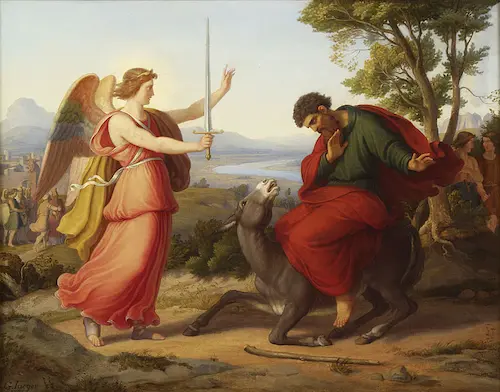

"The basic need of a free society is for its people to be self-governed under God's law. True liberty is not the freedom to live as we please, but the power to live as we know God requires. A corrupt and rebellious people cannot and will not remain free, for the simple reason that such people require a powerful government to pass laws so they can be protected from one another! People will ultimately be ruled voluntarily by God's laws, or they will be ruled forcibly by tyrants."
— A Child's Story of America, Christian Liberty Press
Covenant Curse
"Wherefore hath the Lord done thus unto this land? What meaneth the heat of this great anger? Then men shall say,
Because they have forsaken the covenant of the the Lord God ...." Deuteronomy 29:24-25
Nations fall when a critical mass of God's people no longer honor their covenants.
Satan promotes convenant-breaking to overthrow the freedom of nations.

The Doctrine of Balaam
While Balaam is most famous for his talking donkey, the writers of the New Testament understood the
insidious doctrine that he taught. He instructed Balac to lure the Israelites into sin, so that they would lose
God's protection and be
conquered. This doctrine is employed against us today, by evil, conspiring men.
"... thou hast there them that hold the doctrine of Balaam, who taught Balac to cast a
stumbling-block before the children of Israel ...." Revelation 2:14